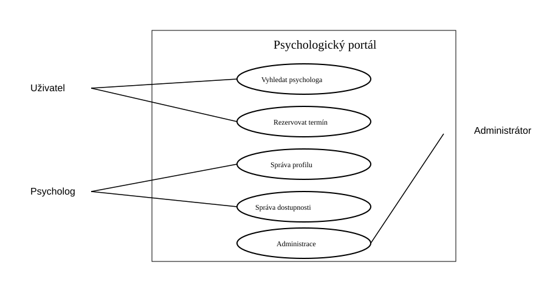
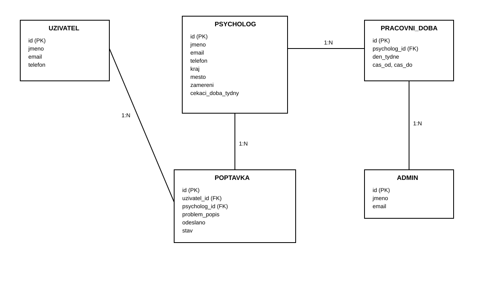

Systém na vyhledání a objednání se k psychologovi
Perex
- Psychologické poradny a psychologové na volné noze se budou moci přihlásit do tohoto systému a spravovat si v něm stránku o sobě.
- Pokud si uživatel někoho vybere, může se i přes stránku k danému psychologovi objednat, jen vyplní formulář se svými kontaktními údaji a problémem, ten pak příjde psychologovi na druhé straně.
- Systém uživateli řekne také dostupnost psychologů - jak dlouhá je čekací doba, v jaké dny a časy pracují.
- Systém by měl sloužit k zjednodušení hledání psychologa v České republice a sjednotit všechny psychology na jedno přehledné místo.
Diagram rolí

Diagram aktivit

Diagram dat

Diagram technologie
